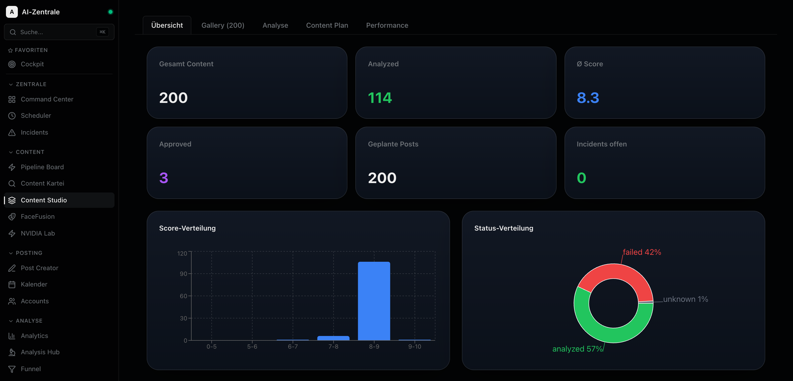
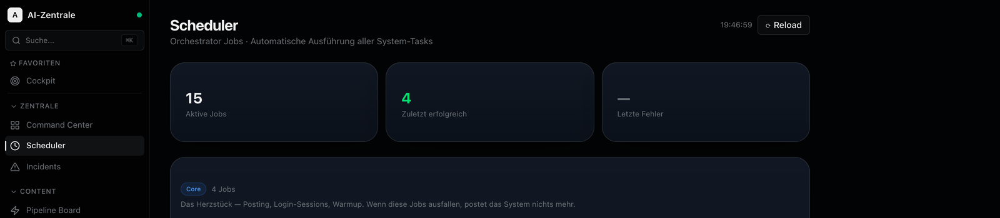

Selbst aufgebaut, selbst betrieben, täglich im Einsatz: eine komplette Content-Operations-Plattform mit Frontend, Backend-Orchestrierung und KI-Agenten. Gebaut mit Claude Code, Codex & Co. — schnell, pragmatisch, produktionsnah.
Alles hier läuft real bei mir — keine Tutorials, keine Klone. Jedes System habe ich von der Idee bis zum Betrieb selbst gebaut.

Control Center für eine komplette Content-Pipeline: 200+ Assets werden automatisch per KI analysiert und gescort (Ø-Score, Plattform-Eignung, Status), geplant und ausgewertet. Dazu Galerie mit Filter/Suche, Content-Kalender, Performance-Charts und ein Pipeline-Board vom Import bis zum Posting.
16 Seiten, angebunden an eine Baserow-Datenbank mit 30+ Tabellen. UI-Flows sind mit Playwright end-to-end getestet.

Das Backend hinter dem Dashboard: ein FastAPI-Service mit 15 Cron-Jobs, die den kompletten Content-Betrieb automatisieren — Posting-Queue, KI-Bild- und Video-Analyse, Analytics-Sammlung, Health-Monitoring, Content-Recycling, Wochenreports und ein täglicher Daily Brief. Fehler und Reports gehen automatisch per Telegram raus.
Läuft als Docker-Container im Dauerbetrieb, mit REST-API für manuelles Triggern und Job-Historie.
Eigener Fork eines Open-Source-Agent-Frameworks, erweitert um 44 selbstgeschriebene Skills: Browser-Steuerung, macOS-Automation, Content-Operations, Media-Pipelines (ComfyUI, FaceSwap), Safety-Guards. Steuerbar per Telegram, angebunden an einen Multi-Provider-LLM-Router.
Selbstgebaute Router- und Proxy-Schicht, die mehrere LLM-Provider (Anthropic, NVIDIA NIM u. a.) hinter einer einheitlichen OpenAI-kompatiblen API bündelt — mit Fallbacks und Rate-Limit-Handling. Damit sprechen alle meine Tools und Agenten dieselbe Schnittstelle.
KI-Tools sind mein Haupthebel — nicht als Spielerei, sondern als tägliches Werkzeug, mit dem ich alleine baue, was sonst ein kleines Team braucht.
Mit Claude Code und Codex steht die erste lauffähige Version in Stunden, nicht Wochen.
Agenten, Skills und Pipelines so verdrahten, dass sie ohne mich weiterlaufen.
Monitoring, Alerts, Tests und Docker gehören dazu — ein Projekt ist erst fertig, wenn es läuft.
Neues Tool, neue API, neues Framework: ausprobieren, einbauen, behalten was funktioniert.